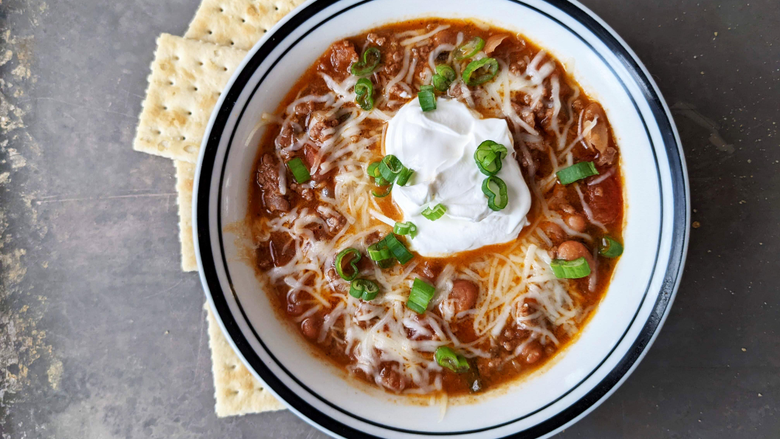

Kevin's Famous Chili

In the wise words of Kevin Malone, "Why waste time say lot word when few word do trick?" Now... lets get to the recipe.
Ingredients
- 2 Tbsp vegetable oil
- 1 chopped onion
- 1 red bell pepper
- 6 cloves chopped garlic
- 1 Tbsp chili powder
- 1 Tbsp paprika
- 2 tsp garlic powder
- 2 tsp Osmo White flakey Salt
- 2 lbs ground beef
- 2 cans kidney beans
- 2 cans diced tomatoes
- 1/4 cup water
- Sour cream
- Shredded cheese
- Green onions (chopped)
Directions
- Heat up a large sauce pan on medium heat, add oil, bell pepper, garlic and seasonings. After 3 minutes add in Onions, the key is to undercook the onions. Everyone is going to get to know each other in the pot.
- After 5 minutes, mix in the ground beef, kidney beans, diced tomatoes and water.
- Let simmer for 1-2 hours. (For best result, simmer on low over night)
- Plate with Sour cream, shredded cheese, and green onions.
- Pro tip, make sure you are aware of your surroundings so you can set it down if it is too heavy. You don't want to spill it at the office.